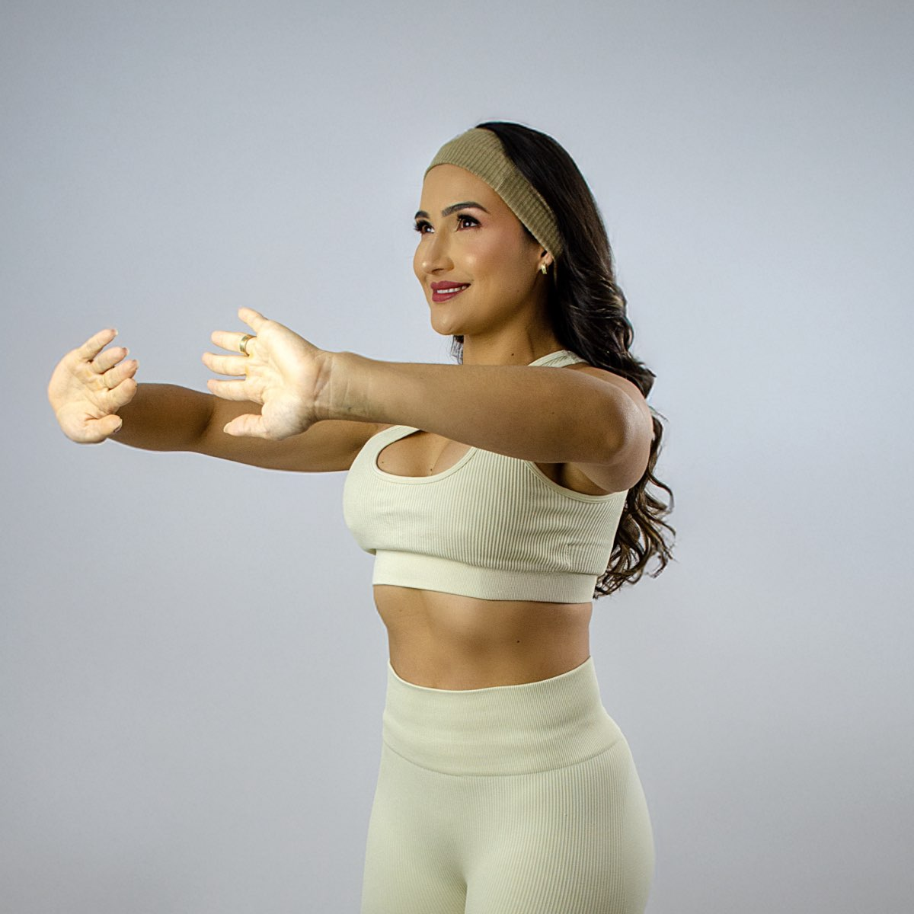
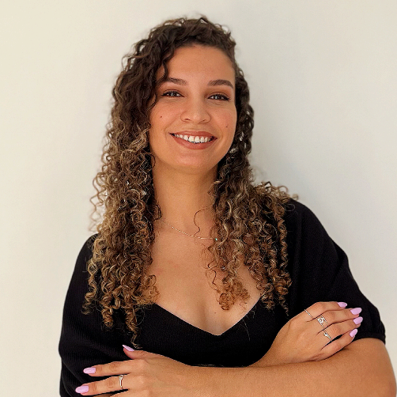

Conheça nossos Especialistas
Uma equipe multidisciplinar reunida para cuidar de você de forma completa — da reabilitação à estética, da nutrição à saúde íntima. Cada profissional traz excelência e dedicação ao atendimento.

Pilates & Estética
Priscila Bastos
Criadora da técnica Barriga Negativa — método exclusivo que combina estética, respiração e consciência corporal para afinar a cintura, definir o abdômen, tratar diástase e melhorar a postura.

Estética Corporal
Drª Isa Carvalho
Criadora do Crio da Isa — técnica inovadora que utiliza o poder do frio para eliminar gordura localizada e remodelar o corpo de forma não invasiva e eficaz.

Harmonização Facial
Drª Bruna Coimbra
Especialista em harmonização facial estética, com foco em resultados naturais e rejuvenescimento completo do rosto.
Gastroenterologia
Heider Trabuco
Gastroenterologista dedicado ao cuidado integral da saúde do sistema digestivo, prevenindo e tratando doenças do estômago, intestinos, fígado e órgãos relacionados.
Fisioterapia Especializada
Drª Ludmila Ferreira
Tratamentos especializados para escoliose, alterações posturais e dores na coluna, com abordagem individualizada e foco na recuperação funcional completa.

Saúde Íntima Feminina
Drª Thiana Mota
Especialista em Ninfoplastia — procedimento íntimo que visa reduzir ou remodelar os pequenos lábios vaginais com segurança e precisão.

Microfisioterapia
Drª Leilane Rocha
Microfisioterapeuta especializada em técnica manual que identifica e trata memórias celulares de traumas físicos e emocionais registrados no corpo.

Fisioterapia & Estética
Milena Barreto
Fisioterapeuta com atendimento completo aliando saúde e estética, proporcionando relaxamento, cuidados com a pele e terapias corporais.

Nutrição
Drª Paloma Mota
Nutricionista com acompanhamento individualizado, baseado nas necessidades e objetivos específicos de cada paciente para uma alimentação saudável e sustentável.